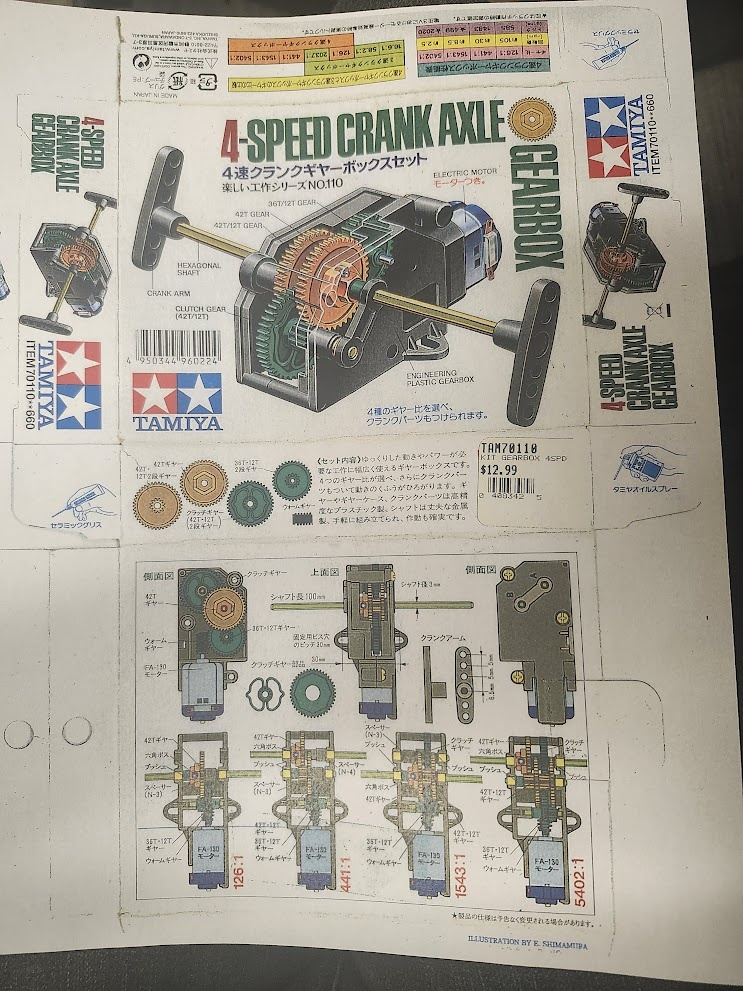
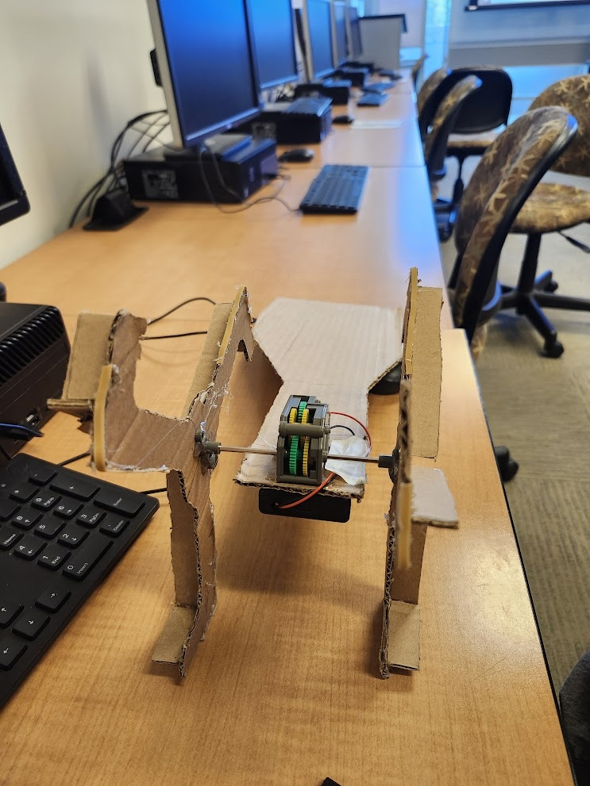
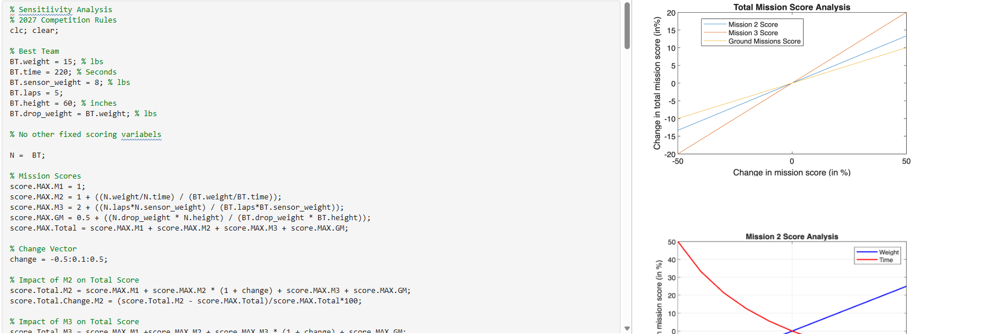
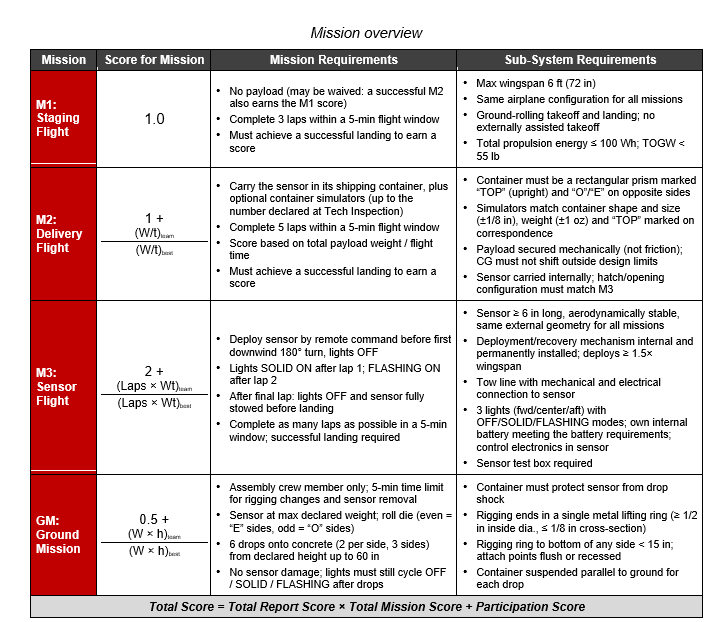

Nardos Mistire Wolde
Mechanical Engineering Student (B.S.) | Washington State University Everett
Junior mechanical engineering undergraduate with an A.S. in Aerospace Engineering, focused on computational mechanics, structural testing, propulsion and UAV sizing, and CAD prototyping.
Engineering & Technical Work
Investigation of Dynamic Testing and Simulation for Aerospace Safety Applications
Atomistic tensile and compression modeling with LAMMPS, MATLAB stress-strain post-processing, and OVITO visualization.
Atomistic tensile and compression modeling with LAMMPS, MATLAB stress-strain post-processing, and OVITO visualization.
Junior undergraduate research supporting a multidisciplinary aerospace engineering effort evaluating structural and material response under dynamic and transient loading conditions.
- Built a reproducible molecular dynamics simulation and post-processing pipeline using LAMMPS, MATLAB, and OVITO, establishing baseline tensile and compression runs on aluminum before expanding to copper and ceramic systems.
- Processed LAMMPS deformation output files in MATLAB (
plo_stress.m) to extract stress-strain curves, capturing linear elastic loading up to approximately 8 GPa near 0.15 strain followed by post-peak softening and yielding. - Visualized atomic lattice evolution, defect nucleation, and structural distortion in OVITO to link microscale deformation mechanisms with macroscopic mechanical parameters.

Low-Cost Tri-Lobe Stair-Climbing Robot
CAD trade study in Creo Parametric and $20-budget physical prototype using a Tamiya 4-speed crank axle gearbox.
CAD trade study in Creo Parametric and $20-budget physical prototype using a Tamiya 4-speed crank axle gearbox.
Designed, modeled, and fabricated a lightweight stair-climbing robot with a teammate under a strict $20 total parts budget for course competition testing.
- Evaluated candidate climbing geometries in Creo Parametric and selected a tri-lobe rotary leg mechanism capable of hooking onto step risers without complex linkages.
- Integrated a Tamiya 4-Speed Crank Axle Gearbox (Item 70110) and battery pack as the central drive shaft, rotating custom-cut corrugated cardboard tri-lobe plates paired with a trailing stabilizer tail.
- Iterated shaft alignment and chassis weight distribution through physical trial runs to successfully climb multi-step wooden test stairs.



AIAA Design, Build, Fly (DBF) | UAV Sizing & CAD
Mission score sensitivity modeling in MATLAB and fuselage CAD layout in Onshape ahead of the 2027 competition.
Mission score sensitivity modeling in MATLAB and fuselage CAD layout in Onshape ahead of the 2027 competition.
Contributing to the WSU Everett AIAA Design, Build, Fly team during the preliminary design and preparation cycle for next year's competition.
- Developed MATLAB sensitivity analysis scripts evaluating how payload weight, lap count, flight time, and sensor weight affect total mission scoring across M1, M2, M3, and Ground Mission requirements under 100 Wh propulsion and 55 lb TOGW constraints.
- Assisted with fuselage geometry and internal payload bay modeling in Onshape to accommodate mechanical retention and remote sensor deployment requirements.


Boeing Scholars Program | Senior Capstone Shadowing
Observing experimental setup, instrumentation, and structural testing workflows on a Boeing-sponsored senior project.
Observing experimental setup, instrumentation, and structural testing workflows on a Boeing-sponsored senior project.
Selected as a junior Boeing Scholar at WSU Everett, shadowing senior engineering teams and Boeing mentors on an industry-sponsored aerospace safety project in preparation for leading senior capstone work next year.
- Observing test matrix planning, data acquisition setup, and experimental validation procedures alongside senior capstone students.
Multi-Variable Dataset Structuring & Interactive Dashboard (Tableau)
Cleaned, filtered, and disaggregated a multi-year federal survey dataset across demographic and state variables.
Cleaned, filtered, and disaggregated a multi-year federal survey dataset across demographic and state variables.
Processed and structured a high-dimensional U.S. government survey dataset (2020 to 2022) to isolate key variables and build a nine-chart interactive visual suite in Tableau.
- Filtered complex multi-indicator records down to core dimensions (year, state, age, sex, and confidence interval bounds) to eliminate noise and maintain statistical comparability.
- Built cross-filtered visual comparisons and state-level breakdowns enabling rapid querying across demographic slices.
Making Space Hospitable for Humans (STEM Audio Series)
Two-part technical audio production comparing Vostok 1 life-support systems with modern Soyuz MS-21 spacecraft architecture.
Two-part technical audio production comparing Vostok 1 life-support systems with modern Soyuz MS-21 spacecraft architecture.
Co-researched, scripted, and edited a two-episode STEM podcast examining how spacecraft environmental control and life-support systems evolved from Yuri Gagarin's Vostok 1 mission to modern Soyuz MS-21 operations.
- Synthesized NASA mission documentation and aerospace physiology literature covering microgravity adaptation, cabin atmosphere regulation, and long-duration mission constraints.
Technical Tools
Simulation & Analysis
MATLAB, Python, LAMMPS, OVITO
CAD & Prototyping
Onshape, Creo Parametric, Mechanical Fabrication
Data & Documentation
Tableau, Technical Reporting, Experimental Data Reduction